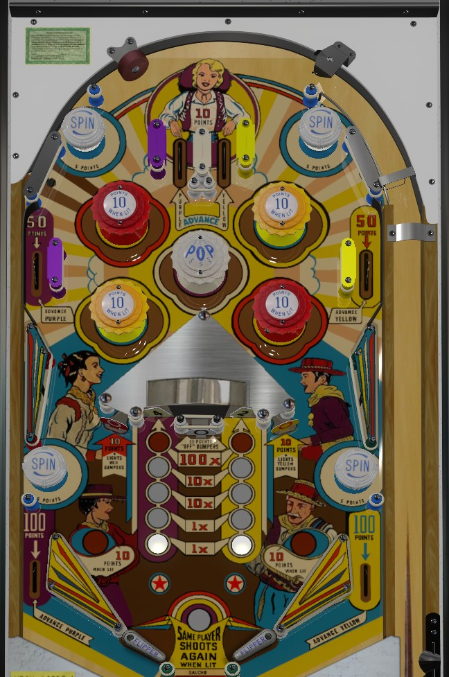

Rollover lanes increase the multipliers on the roto-target score. Spin targets spin the roto-target. Hitting a roto-target face scores the number of points on it times the multiplier, and resets the multiplier. The star on the roto-target scores 100 points and an extra ball and cannot be multiplied. Standup targets on either side of the roto-target light various bumpers and slingshots for 10 points, which can be quite helpful; the center standup target, which gets hit a lot by slingshots, turns them off.
The roto-target in the center of the table has two faces visible at any given time. Visible faces can read 1, 2, 3, 4, 5, or Star. White passive bumpers labelled Spin score 5 points and change which faces of the roto-target are visible. Each of the two faces has its own multiplier. The left top lane, left upper side lane, and left out lane advance the left multiplier, and the same features on the right advance the right multiplier. (Top lanes score 10 points, upper side lanes score 50 points, and out lanes score 100 points.) Advancing a roto-target multiplier 0 or 1 times means its value is 1x; 2 or 3 advances means the target value is 10x; 4 or more advances maxes the multiplier at 100x. Hitting a roto-target face with a number on it scores the number times the current multiplier, and resets the multiplier. Hitting a roto-target face with a star on it scores 100 points and an extra ball; the 100 points does not get multiplied, but that side's multiplier will be reset anyway. Max 1 extra ball per ball in play.
The white bumper labelled POP always scores 1 point. Red and yellow bumpers score 1 point when not lit or 10 points when lit. Slingshots also score 1 point, or 10 when lit. The standup target to the left of the roto-target structure lights the red bumpers and the right slingshot. The standup target to the right of the roto-target lights the yellow bumpers and the left slingshot. The center standup target scores 10 points and unlights any and all lit bumpers.
There are no in lanes. Flippers back up directly to the slingshots. Out lanes score 100 points and advance the multiplier of the roto-target face on its side of the playfield. Slingshots are lit alongside pop bumpers as described above. Small posts that lie just below the tips of the lowered flippers can help save the ball from a drain through the wider-than-normal flipper gap.
There are no playfield specials, and no end of ball bonus. Tilt ends game, but in a multiplayer game, tilt only disqualifies the player who tilted.